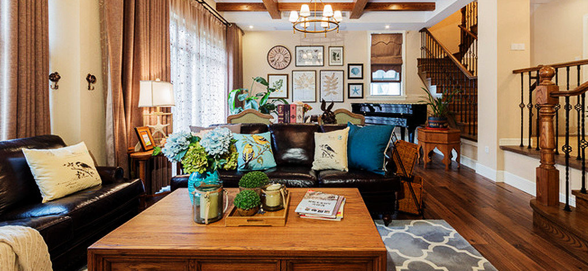

关于我们
关于我们
 神州天雅地毯（北京）有限公司（以下简称天雅地毯）专业从事于地毯的科技研发、生产和销售，是国内著名的地毯解决方案提供商。历经十余年的发展，形成了系统化、全方位的营销服务网络。目前，天雅已形成亚洲规模最大的、以印花地毯为主导，以阿克明地毯、拼块地毯、簇绒地毯及家居地毯为辅的全产业链地毯生产，年销量超过1200 万平米。
在突破发展的征程上，天雅地毯始终坚持“超越自我，追求卓越，感动用户”的精神，以“科技引领，创新发展”为指导思想，通过专业实力和优质服务，让用户的空间环境得到美化，使用户更加舒心舒适。
1.科技引领——满足用户需求无止境。
天雅地毯致力于为用户提供完美的地毯解决方案，针对用户在地毯使用过程中的各种实际问题，与地毯业顶级院校及科研机构、国际国内地毯检测机构强强联合，率先成立行业内科研实力最雄厚的天雅地毯科技研发实验室。天雅地毯实验室专注于地毯实用科技的研发与新型功能材料的应用，不断实现技术突破，持续满足用户日益多元化的需求。
迄今为止，天雅囊括了地毯科技的5项发明专利、数十项实用新型专利及大量的图案设计著作权。
2.设计引领——前沿设计，满足用户的顶级需求。
天雅地毯的国际化设计团队，确保从空间环境创意到用户个性化定制，得到完美承接。无论用户来自于尊贵奢华的国际化五星级酒店，还是个性趣味十足的主题酒店，天雅国际化的设计团队，总能为用户量身定制最适宜的地毯设计解决方案。
国际合作设计团队：专注于国际流行趋势、洞察最前沿时尚脉搏
设计团队：专注于国人审美研究、满足用户个性化需求设计团队：专注于现场考察沟通，提供最直观设计方案拥有业内最大最全的图库，每年推出原创主题图册，确保从空间环境创意到客户个性化定制，得到完美承接；
3.产品引领——丰富、极致的产品满足用户多样化需求。
天雅地毯秉承以用户需求为导向的经营理念，推出地毯行业内最完整的“三维度”产品线组合。通过三个独创的划分维度，天雅地毯用丰富的产品线组合，形成了最全产品线的行业引领，全面有效地覆盖到不同用户群体的多样化需求。
4.品质引领——倾注专业精神，成就品质标杆。
天雅地毯以提高印花地毯的品质做为企业发展的根基，与国际顶级原料供应商战略合作，确保产品品质在源头引领于行业；积极优化生产管控流程，成就了天雅地毯远高于行业水平的生产工艺。正是源于对科技、原料、工艺的精益求精，使天雅地毯在产品品质上傲然于整个行业，获得了用户与行业的一致认可。
5.规模引领——为用户快速稳定的交货。
天雅地毯生产规模亚洲第一。目前，天雅地毯拥有6 条高清数码印花生产线；多套比利时范德维尔产最新款阿克明斯特高速织机；多套美国CMC 织机、英国柯贝尔织机。以上设备均属世界先进水平，高效生产造就了行业最快的交货速度。
6.服务引领——贴近用户与感动用户的服务。
在天雅的地毯解决方案中，不仅包括完美融合用户空间环境的地毯印花设计和拥有卓著品质的优质地毯，同时还涵盖了天雅的完整规范服务链条。全方位、系统化的服务真正地让用户在地毯方案解决过程中体验“感动服务”。
天雅地毯构成了全方位的销售与服务网络，与用户无缝对接，第一时间洞察和满足用户需求。
目前，已与大多数的大中型酒店及办公写字楼建立了良好合作关系，不仅有万豪国际集团、喜达屋酒店、希尔顿酒店等豪华星级酒店，也有如家、汉庭、锦江之星等主题快捷酒店，同时也为全国各线城市办公写字楼提供全面的办公地毯解决方案，业务覆盖全球领域。
触屏版
|
电脑版
京ICP备11048675号-1 Copyright © 2004-2013 www.hongyedt.com ALL Rights Reserved
公司简介
企业荣誉
厂房设备
技术中心
地毯资讯
产品展示
经典案例
工程部
设计部
售后服务
联系我们